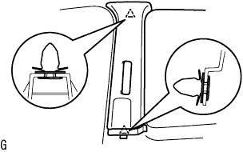
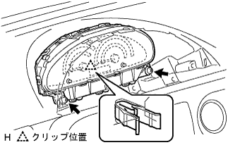
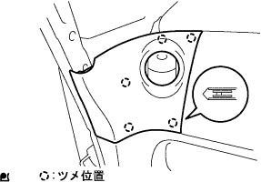
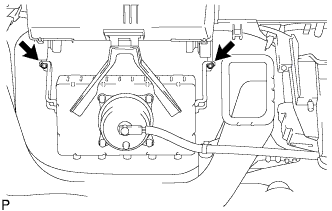

Instrument panel passenger airbag Assy (door pear) removed |
| 1. Handling / Work precautions |
reference)| 2. Bolts, screws, nut lists |

| 3. Battery minor Starminal cuts |
| 4. The front door opening trim werder strip RH is removed |
Instrument panel w / Passenger airbags are removed from the front door opening trim wesstrip RH required to remove the assessy.
| 5. Remove the front pillar garnish LWR RH |
 |
Pull up from the rear end of the vehicle and remove 5 places of claws.
Pull the back of the vehicle and remove the front pillar garnitsui LWR RH.
| 6. Remove the front pillar garnish RH |
|  |
Pull the garnitsu shu in the inside of the vehicle, remove the clip, and remove the center pillar garnish RH.
| 7. Reardoor opening Trim Weather Strip LH separation |
Instrument panel w / Passenger Airbag is removed from the reardoors opening trimweather strip LH.
| 8. Pillar No.1 Garnish LH removed |
Remove the claws and remove the pillar No.1 Garnitsui LH.
| 9. Remove the front pillar garnish LH |
 |
Pull the inside of the vehicle from the upper part of the garnish, remove the clip, and remove the front pillar garnish LH.
| 10. Remove the front pillar garnish LWR LH |
 |
Remove the four claws and remove the front pillar garnitsui LWR LH.
| 11. Instrument cluster finish panel No.1 removed |
 |
Pull the instrument cluster fuinitsui panel to the rear of the vehicle, remove the eight claws, and remove the instrument cluster fuinitsui panel.
| 12. Combination meter Assy |
Take off two squeegees.
Pull the combination sijon meter ASSY behind the vehicle and remove the critpo.
|  |
Cut the connector and remove the combination sijon meter ASSY.
| 13. Globe Compartment Door Sub-Asset |
 |
Remove two screws <j> and remove the grab compartment door.
| 14. Instrument panel register assy No.1 |
|  |
Pull the instrument panel register Assistor ASSY No.1 to the rear of the vehicle, remove the five claws, and remove the instrument panel register ASSY No.1.
| 15. Instrument cluster finish panel SUB-ASSY CTR |
Lower the shift lever and tilt down the steering.
 |
Pull the instrument cluster foinitsu panel CTR behind the vehicle, remove the 12 claws, and remove the instrument cluster hinitsu panel CTR.
| 16. The instrument panel finish plate is removed |
 |
Remove one screw <b> one, pull the instrument panel fuinitsu shiyu plate behind the vehicle, remove the four claws, and remove the instrument panel fuinitsui plate.
| 17. Instrument panel passenger airbags ASSY connector cut off |
 |
Instrument panel passenger airbag Cut the connector for ASSY.
| 18. Instrument panel W/Passenger Airbag ASSY |
Remove the cover in the grabbox, and remove the passenger airbag fixing bolt <a> from there.
Remove the screw <c> or <d> 4.

Pull the front side of the instrument panel upward, remove the seven claws, and separate the central connector and clamp.
Be careful not to damage the steering wheel ASSY, and remove the instrument panel together with passenger airbags and ducts.
Remove the screws <b> two, and remove the side defrotorste nozzle duct No.2 from the instrument panel W/ Passenger Airbag ASSY.
Remove the screws <b> two, and remove the Hita Tsugu register duct No.3 from the instrument panel W/ Passenger Airbag ASSY.
Remove the screws <b> two, and remove the side -deflo -rosuled duct No.1 from the instrument panel W/ Passenger Airbag Assy.
Remove the screws <b> two, and remove the Hita Tsugu register duct No.1 from the instrument panel W/ Passenger Airbag Assy.
| 19. Instrument panel passenger airbag ASSY (door pear) |
|  |
Take off two scratches.
 |
Remove the back wall of the air vats and remove the Futsuku, rotate the Patsusenenja Airbag ASSY as shown in the figure, remove the Futsuku from the rear wall of the airbatsu -gudoor vehicle, and remove the Pats Senja Airbag ASSY.